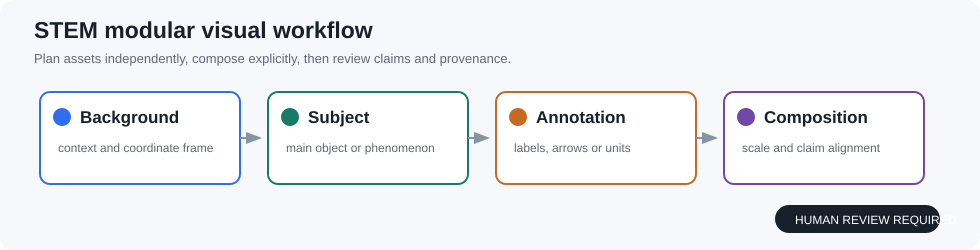

paper-harness / offline demo
Reliable multimodal evaluation
A supervised research loop with evidence, adversarial review and visual planning.
FINAL REVIEW
Research pipeline
01 Literature2 imported source records
02 Generate3 competing directions
03 Critique3 adversarial rounds
04 Experimentbaseline + metrics
05 Evidencehuman approval gate
06 Draftprovenance-aware text
07 Reviewtext + visual checks
Evidence trace
Literature records2
Innovation candidates3
Adversarial rounds3
Network requiredNo
STEM visual strategy
Modular composition
Elements are planned independently before composition.
background → subject → annotation
Supervision: scale, alignment, provenance, claim consistency.

Competing innovation directions
Method interventionChange the method while holding evaluation fixed.
Data interventionChange the data or representation bottleneck.
Evaluation interventionExpose failure cases hidden by aggregate metrics.
Self-adversarial loop
Round 1Critic checks falsifiability and baseline.
Round 2Generator revises failure modes.
Round 3Winner is ranked, not automatically accepted.
This is an offline, deterministic demo. Real providers, experiments and image generation require explicit configuration and human approval.